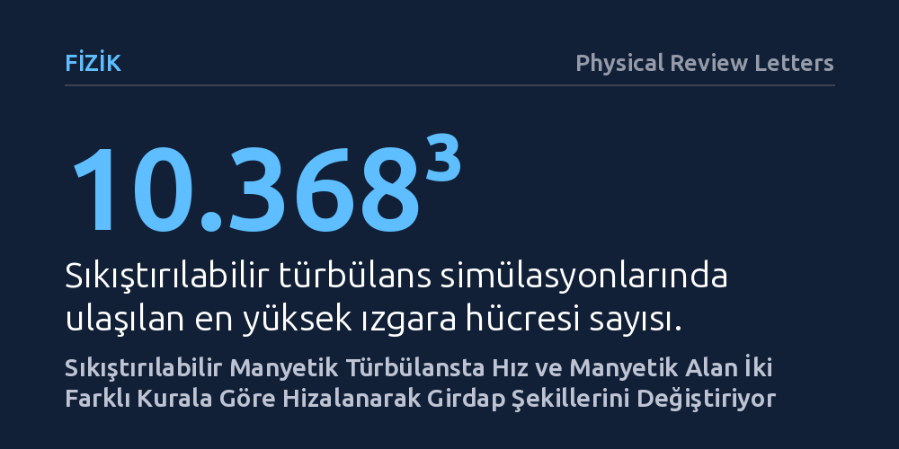

FIZIK · Physical Review Letters · 2026-10-18
Araştırmacılar, manyetohidrodinamik türbülansın küçük ölçeklerinde hız ve manyetik alan vektörlerinin nasıl hizalandığını yüksek çözünürlüklü simülasyonlarla inceledi. Analizler, bu hizalanmanın iki farklı ölçeklenme kuralına uyduğunu, girdapların şeklini değiştirdiğini ve manyetik yeniden bağlanmanın enerji aktarımını denetleme eşiğini yükselttiğini gösterdi.
Güneş rüzgârından yıldızlararası ortama kadar uzaydaki gaz ve plazmanın enerjiyi nasıl dağıttığına dair klasik modellerin eksik olduğunu göstererek astrofiziksel hesaplamaları yeniden şekillendiriyor.

Evrenin büyük bir kısmı boşluktan değil; yıldızlararası gaz, Güneş rüzgârı ve galaksiler arası boşluğu dolduran iyonlaşmış plazmadan oluşur. Bu plazma ortamı neredeyse her zaman sakin bir göl gibi değil, fırtınalı bir deniz gibi çalkantılıdır, yani türbülanslıdır. Türbülans dendiğinde aklımıza genellikle tam bir kaos ve rastgelelik gelir. Ancak manyetik alanların eşlik ettiği plazma türbülansında, akışın içinde beklenmedik bir düzenlilik ortaya çıkar: Belirli bölgelerde plazmanın akış hızı ile manyetik alan çizgileri birbirine neredeyse tamamen paralel ya da zıt hizalanır.
Bu yerel hizalanmanın rastgele bir tesadüf mü yoksa türbülansın temel bir doğası mı olduğu ve enerjinin büyük girdaplardan küçük girdaplara aktarılmasını nasıl etkilediği on yıllardır fizikçilerin kafasını kurcalıyordu. Çünkü enerjinin nasıl aktarıldığını tam olarak bilmeden ne yıldızların nasıl doğduğunu ne de Güneş'ten fırlayan parçacıkların Dünya'nın manyetik kalkanına nasıl çarptığını doğru hesaplayabiliriz. Bu çalışma, akışkanın sıkışabilir olduğu gerçekçi koşullarda söz konusu hizalanmanın dinamiklerini aydınlatmayı amaçlıyor.
Evrendeki manyetik plazmayı bir laboratuvar tüpüne koyup incelemek imkânsızdır; uzay araçlarının yaptığı doğrudan ölçümler ise yalnızca tek bir noktadan veri toplayabilir. Bu nedenle araştırmacılar, fizik kurallarını devasa süper bilgisayarlara aktararak uzaydaki türbülansı sanal bir kutunun içinde baştan yarattılar. Çalışmada, manyetik akının korunduğu ve korunmadığı iki farklı fiziksel senaryoyu temsil eden sıkıştırılabilir manyetohidrodinamik simülasyonları kullanıldı.
Araştırmanın ulaştığı hesaplama gücü, 10.368³ gibi son derece yüksek bir ızgara hücresi çözünürlüğünü barındırıyor. Bu devasa ızgara boyutu, türbülansın en büyük ölçeklerinden enerjinin kademeli olarak aktarıldığı atalet ölçeklerine kadar olan tüm basamakları hassasiyetle izlemeyi mümkün kıldı. Bilim insanları simülasyonlardan elde ettikleri verileri, yerel hizalanma durumlarından sapmaları tahmin eden bir analitik sabit enerji akısı modeliyle doğrudan karşılaştırdılar.
Yapılan simülasyonlar ve teorik modellemeler, hizalanmanın tek bir kurala bağlı olmadığını, iki ayrı matematiksel kuvvet yasası izlediğini gün yüzüne çıkardı. Ölçümler, hız ve manyetik alan arasındaki açının ölçek küçüldükçe λ^(1/8) oranıyla daraldığını, yani vektörlerin birbirine daha sıkı hizalandığını gösterdi. Benzer şekilde, hız vektörü ile akışkanın dönme hareketini temsil eden vortisite (girdaplaşma) vektörü arasındaki açının da λ^(1/16) üssüyle ölçeklendiği tespit edildi.
Bu iki yasa, klasik türbülans kuramlarının öngördüğü girdap geometrisini kökten değiştiriyor. Geleneksel modeller türbülans girdaplarının basitçe uzayan ya da yassılaşan şekiller aldığını varsayarken, yeni bulunan hizalanma ölçekleri girdapların ölçek küçüldükçe beklenenden çok daha belirgin biçimde uzayıp inceldiğini ve yapısal biçimlerinin ölçeğe bağımlı olarak başkalaştığını ortaya koyuyor.
Bu bulguların en kritik teorik sonucu, manyetik yeniden bağlanma mekanizması üzerinde görülüyor. Manyetik alan çizgilerinin aniden kopup birleşmesiyle muazzam enerji açığa çıkaran yeniden bağlanma olayının, türbülans çağlayanında enerjinin bir ölçekten diğerine aktarılmasını doğrudan yönettiği düşünülüyordu. Ancak ortaya konan yeni hizalanma yasaları, girdapların şeklini değiştirdiği için manyetik yeniden bağlanmanın kontrolü ele geçirebilmesi gereken kuramsal eşiği daha yukarı taşıyor.
Bu durum, evrendeki türbülanslı plazmalarda manyetik yeniden bağlanmanın enerji akışını daha önce sanıldığı kadar kolay veya her ölçekte baskılayamayacağını gösteriyor. Bulgular; yıldızlararası gaz bulutlarının soğuma hızından Güneş tacındaki aşırı ısınma problemine ve kozmik ışınların galaksimizdeki yayılımına kadar pek çok astrofiziksel sürecin yeniden hesaplanması gerektiğini ortaya koyuyor.